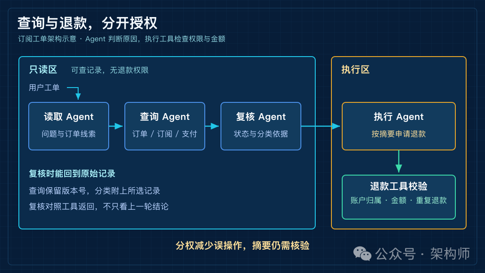
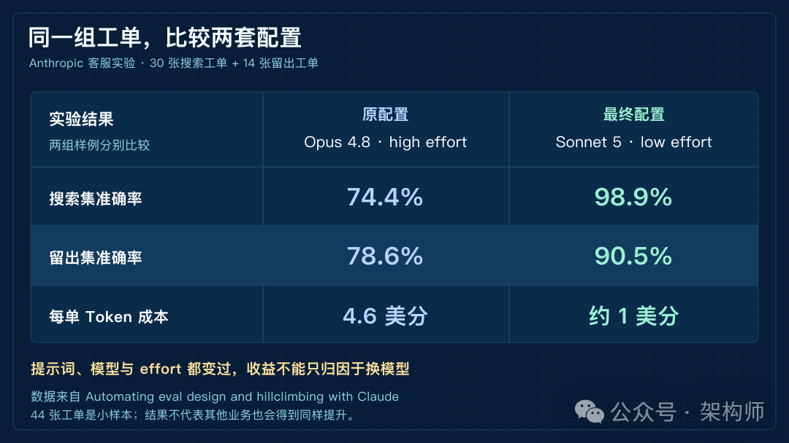
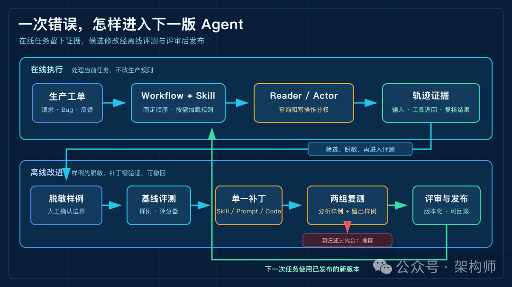

Claude.dev 的四篇工程文章：Agent 怎样才算真的改进
来源：微信公众号 归档日期：2026-10-04 抓取状态：成功 原文字符：7012｜配图：4 张
摘要速览
- 架构师（JiaGouX） 我们都是架构师！ 架构未来，你来不来？ 客服工单里，用户提了一个问题：“会员已经取消，怎么这个月又扣款了？” 处理这样的工单，Agent 得先确认两件事：钱有没有扣，订阅是什么状态。 查订单、查订阅，两个接口都正常返回，也可能分错队列。Anthropic 在 Skills 文章里记过一个细节：
subscriptions表只追加、不覆盖，当前记录要取最高version，不能按最新 `created_a
核心内容
（待补充）
可执行启发
（待补充）
我的想法
（待补充）
原文沉淀
来源：https://mp.weixin.qq.com/s/JcT_AGq1ewrp7_B-Z_QINg 平台：weixin｜作者：架构师 抓取方式：cdp｜字符数：7561｜图片：4
架构师（JiaGouX）
我们都是架构师！ 架构未来，你来不来？
客服工单里，用户提了一个问题：“会员已经取消，怎么这个月又扣款了？”
处理这样的工单，Agent 得先确认两件事：钱有没有扣，订阅是什么状态。
查订单、查订阅，两个接口都正常返回，也可能分错队列。Anthropic 在 Skills 文章里记过一个细节：subscriptions 表只追加、不覆盖，当前记录要取最高 version，不能按最新 created_at 来取。
这就能解释一种不容易从错误日志里发现的误判：Agent 查到了数据，却按创建时间选错了那一行。接口没有报错，后面的分类和退款依据已经偏了。
沿着这个例子往下看，复核 Agent 即使按版本号重新查询、改对分类，执行 Agent 也完成了退款，这次错误仍可能原样出现在下一张工单里。给 system prompt 补一句“订阅表取最高版本”，也还不能证明问题已经修好：下次会不会读到这条规则？改完会不会把另一类工单分错？
工单关掉以后，系统究竟留下了什么？这是我读 Claude.dev 那四篇工程文章时，想追下去的问题。
10 月 1 日上线的 Claude.dev，收录了此前发布的 Dynamic Workflows、Skills、上下文工程和 Eval 优化文章。它们讨论的改动，落在工作流、规则文件、工具和模型配置上，不涉及模型权重的自我更新。用订阅工单继续往下推，恰好能看到一条规则从发现到生效，中间还缺哪些工作。
权限由程序控制
查询错了，尚有机会复核；退款一旦执行，影响就到了用户账户。即使这些步骤都交给 Agent，读数据和动账户也值得分开安排。
Dynamic Workflows 的客服队列示例，把 reader 和 actor 分开：reader 接触不可信的用户文本，只有只读工具；actor 拿结构化摘要，尝试修复、提 PR，或者转人工。
把这套分工用到退款业务，可以让 reader 提取问题和订单线索，查询 Agent 读取订单、订阅与支付记录，再让复核 Agent 对照这些记录检查分类。最后的执行 Agent 才有退款权限。这样，即便读取工单的 Agent 把用户文本当成指令，也不能直接调用退款工具。

订阅工单的权限架构
图 1：订阅场景的架构示意。reader/actor 分权参考 Dynamic Workflows，查询、复核与退款校验为本文延伸。
摘要也可能传错信息，分开上下文并不能消除所有风险。放到退款业务里，我会让执行工具再次校验账户归属、可退金额和是否已经退款。退款请求合不合法，由程序检查；退款理由是否成立，再交给 Agent 结合记录判断。
这也是 Dynamic Workflows 把流程写成 JavaScript 的意义。agent() 启动子 Agent，parallel() 等待并行结果，pipeline() 把每一项依次送过处理阶段。程序可以等查询完成再复核，也可以在缺少记录时停止执行。
Sid Bidasaria 解释这项功能时，强调的也是程序化执行：Claude 写编排脚本，再由脚本启动子 Agent。一次审查要求检查 50 项，脚本可以核对完成数量，避免只做了 35 项就接受最终总结。复核 Agent 用独立上下文重新看证据，也能减少顺着前一次结论继续推的情况。
不过，这张图不意味着每张工单都要启动四个 Agent。查询和信息提取可以合并，简单分类也可以直接用程序完成。官方的深度研究界面示例用了 22 个 Agent、110 万 Token；多一层复核是否值得，得看它能发现什么错误，以及多花多少时间和费用。
规则跟着任务走
权限分开了，读表规则仍得有地方存。
“取最高 version”只和订阅任务有关。若把退款、物流、发票和登录故障的处理经验全追加进 system prompt，一次登录请求也会带着订阅表的字段说明。
我会把这条规则放进订阅 Skill。在 SKILL.md 里写清表的含义和查询方式，再用 description 说明适用的任务。模型看到订阅问题时，可以据此选择加载。这个选择是否准确，后面还需要用工单来测。
Anthropic 把这类容易踩错的细节放在 Gotchas 小节。“仔细检查订阅状态”很难验证；“同一订阅取最高 version，不按 created_at 排序”，则能直接检查查询结果。字段名和读取方法，比再加一句“务必认真”有用。
上下文工程的调整也沿着这个方向。面向 Claude Opus 5、Claude Fable 5 等模型，Claude Code 删除了超过 80%的 system prompt，在 Anthropic 的编码评测里没有观察到可测损失。
具体删了什么？原来约 9,100 个字符的 Todo 工具说明，缩成了简短描述、状态枚举，以及“同时只有一项处于进行中”的约束。代码审查和验证指南移到按需加载的 Skill，完整工具定义则等 ToolSearch 找到后再加载。
这个实验不能替另一套业务决定该删多少提示词。但它给了一个可检查的方向：订阅规则有没有放到订阅任务里，工具参数有没有在接口里说明，权限有没有由执行程序控制。三处都写一遍，并不一定更可靠；更新时漏掉一处，反而会留下互相矛盾的指令。
错误要能重现
订阅工单被复核 Agent 改对后，如果记录里只剩“取消后扣费，已退款”，维护者还是不知道它最初为什么分错。
需要一起保留的，是当时的工作流和 Skill 版本、接口返回的关键字段，以及两次分类的依据。最初取了哪一行，复核为什么换了另一行，这些细节能分清几种不同的问题：规则没有加载，模型没有遵守，或者工具根本没返回版本字段。
接口调用成功，只能说明请求跑通了。业务判断有没有做对，还得对照数据看。
这些记录可以成为评测样例，但不适合整段复制。/claude-api build-eval 会先确认敏感数据和留存要求，再读取生产轨迹。缺少记录时，也可以从 Bug、客服工单、手写的 5～10 个样例起步。
回到订阅问题，用户姓名和真实订单号可以脱敏；同一订阅的多条记录、版本号与创建时间之间的关系则得保留。预期结果写到具体字段：读哪条记录、分到哪个队列、允许什么动作。这样重跑，才知道补的规则有没有起作用。
选样例时还有一个容易忽略的地方。只收当前模型做错的工单，评测会偏向它的弱项；只取现有用户提交的任务，也可能偏简单，因为用户未必会尝试那些他们觉得系统做不了的事。build-eval 会让人逐条确认输入是否有代表性，标准答案也由人核对。复核 Agent 给出的改判，可以成为线索，但不能直接算标准答案。
评分也会出错
分类只有几个固定队列，程序比较标签就能打分。开放式回复有多种合格写法时，才需要另一个模型来评，也就是 LLM-as-judge。
评分标准仍可以很具体：是否读对了订阅记录，是否解释了扣款原因，是否承诺了超出权限的退款。裁判模型与被测模型分开，再抽几条评分过程人工看一遍，往往比盯着总分更容易发现问题。
build-eval 还会把同一个输出评两次，检查结论是否变化。超时、API 错误和截断另行记录。否则，改完规则后分数涨了一点，可能只是这次网络没出问题，或者裁判换了个判法。
在 claude-api Skill 的优化实验里，Anthropic 就遇到了错题。一个任务只要求代码捕获一种错误，评分器却要求至少三层错误链；另一个评分器的规则与官方文档冲突，实际调用 API 后才确认文档是对的。
那次实验从 66.1% 做到 87.9%，包括补齐 8 个功能、修正 C# 和 Java 类型表，也包括修改题目和评分器。这组涨分不能全算成 Skill 能力的提升，评测本身也变了。
分数连续几轮不动时，我会先看这些一直失败的样例。继续往 Skill 里加规则，有时只是在逼它满足一个原本就不合理的答案。
补丁经得起对照吗
评分可信以后，才轮到修改规则、比较配置。
订阅问题可以先只改 Skill，模型和工作流保持原样。这样重跑后，分类变好或变坏，都比较容易找到原因。若一轮里连权限逻辑、模型和提示词一起换，结果即使上涨，也很难判断哪项改动值得保留。
/claude-api hillclimb 会先问清优化目标和允许修改的范围，再随机拆分评测样例。一组叫 train，供分析器查看失败过程、寻找修改办法；另一组是 held-out test，留出来检验补丁。这里的 train 用于调整应用配置，不涉及训练模型权重。
分析器看不到留出样例的内容，每轮只提一个补丁，也不能把失败工单原文抄进提示词。原文的质量优化流程里，两组分数都提高，才保留补丁；任何一组退步，就撤回。只在看过的样例上提高，留出样例没变化，会被当作过拟合信号处理。
分数还得超过正常波动。实验开始前会检查噪声，最终报告给出置信区间；改善幅度落在噪声里，就不建议合并。如果目标是省钱，则可以在质量持平的前提下比较成本，不必每次都追求准确率上涨。
Anthropic 的客服实验用了 44 张工单：30 张用于搜索配置，14 张留出。原配置是 Opus 4.8、high effort，搜索集准确率 74.4%，每单 Token 成本 4.6 美分。
优化过程先清理了强制调用工具的步骤、额外的中间笔记要求，以及互相冲突的规则，再比较模型与思考强度。最后补上路由规则和退款上限说明，选定 Sonnet 5、low effort：搜索集准确率 98.9%，每单约 1 美分。

客服实验原配置与最终配置对比
图 2：据 Anthropic 客服实验数据重绘。30 张搜索工单与 14 张留出工单分开比较，成本仅指 Token 费用。
留出工单上的结果是78.6% → 90.5%。这比只看搜索集的涨分多了一份依据。不过，44 张工单仍是小样本，而且提示词、模型和 effort 都变过，不能把全部收益归因于换了小模型。
对这组任务，较低成本的配置最后做得更好。放到自己的业务里，值得验证的是：删掉旧模型留下的多余步骤以后，是否还需要原来的模型和思考强度。答案可以由同一批工单、同一套评分来比较。
写进文件，还没生效
“按最高版本读取订阅”通过评测之后，还可能卡在一个地方：模型没有加载订阅 Skill。
description 如果只写“处理订阅相关业务”，未必能覆盖用户说的“取消会员后又扣钱”。把实际会出现的请求写清楚，再用工单检查触发情况，比单看 Skill 文件是否完整更有用。
Anthropic 用 PreToolUse Hook 记录 Skill 的使用情况，据此寻找调用量低于预期的 Skill。放在订阅业务里，可以把工单类型和加载记录对照起来：该用的时候用了没有，无关任务里有没有误用。
小团队把 Skill 放在 .claude/skills，就能跟代码一起评审。Anthropic 内部则先把新 Skill 放到 GitHub sandbox，获得实际使用后，再由维护者提 PR 放进 marketplace。共享给更多人之前，已经有使用记录可看。
对于退款这类会改账户的任务，我会把 Skill 的版本、评测结果和回退版本一起留在发布记录里。上线后观察新工单：规则加载了没有，查询取了哪一行，有没有把原来分对的工单改错。出了回归，才能退回明确的旧版本，而不是凭印象再改一次提示词。
下一张工单见分晓
到这里，处理工单和修改系统就有了不同的路径。在线 Agent 按当前规则查询、复核和执行，留下运行记录；离线流程筛选样例、评测补丁，经评审后发布新版本。

一次 Agent 失败如何进入下一版系统
图 3：本文建议的改进流程。在线任务使用已发布规则，候选修改经过离线验证后再上线。
Karpathy 谈上下文工程时，把控制流、模型调度、生成与验证、评测等工作都放进了模型外围的软件里。订阅工单恰好让这些工作有了具体落点：谁能退款，谁能改规则，修改由哪些结果支持。
对于这样的业务，我倾向于让线上 Agent 提交错误记录和修改建议，把发布规则的权限留在离线评测与评审流程里。工单可以当天处理，规则是否扩大使用，可以等验证结果。
下一张“取消后扣费”的工单进来，日志里能看到新 Skill 被加载，查询取了最高版本，分类也正确。再看其他订阅工单没有退步，这时才有依据说这条修改有效。留出评测通过了，线上却还在读旧规则，那要继续查的就是加载和发布过程。
参考资料
1. ClaudeDevs，Claude.dev is our new home for developers building with Claude（https://x.com/ClaudeDevs/status/2105391694741119047）
2. Thariq Shihipar、Sid Bidasaria，A harness for every task: dynamic workflows in Claude Code（https://claude.dev/blog/a-harness-for-every-task-dynamic-workflows-in-claude-code/）
3. Thariq Shihipar，Lessons from building Claude Code: How we use skills（https://claude.dev/blog/lessons-from-building-claude-code-how-we-use-skills/）
4. Thariq Shihipar，The new rules of context engineering for Claude 5 generation models（https://claude.dev/blog/the-new-rules-of-context-engineering-for-claude-5-generation-models/）
5. Lance Martin，Automating eval design and hillclimbing with Claude（https://claude.dev/blog/automating-eval-design-and-hillclimbing/）
6. Sid Bidasaria，Dynamic Workflows thread（https://x.com/sidbid/status/2060047508806746142）
7. Andrej Karpathy，Context engineering（https://x.com/karpathy/status/1937902205765607626）
如喜欢本文，请点击右上角，把文章分享到朋友圈
如有想了解学习的技术点，请留言给若飞安排分享
因公众号更改推送规则，请点“在看”并加“星标”第一时间获取精彩技术分享
·END·
相关阅读：
- 设计 Self-Harness 架构：会自我改进的Harness
- Loop Engineering，应该赞成还是反对？
- 架构排熵：Loop Engineering 的持续清理系统
- CLAUDE.md 拆解：Agent 进仓库前的上下文入口
- 从 LLM 到 Agent 到 Harness：真正复杂的是运转起来之后
版权申明：内容来源网络，仅供学习研究，版权归原创者所有。如有侵权烦请告知，我们会立即删除并表示歉意。谢谢!
架构师
我们都是架构师！

关注架构师(JiaGouX)，添加“星标”
获取每天技术干货，一起成为牛逼架构师
技术群请加若飞：1321113940 进架构师群
投稿、合作、版权等邮箱：admin@137x.com
归属：[[02-输入/按主题/AI与效率/_index|AI与效率]]